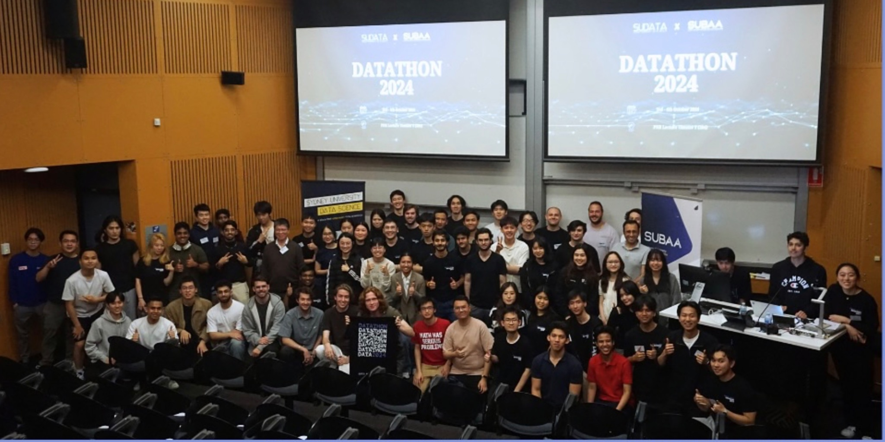
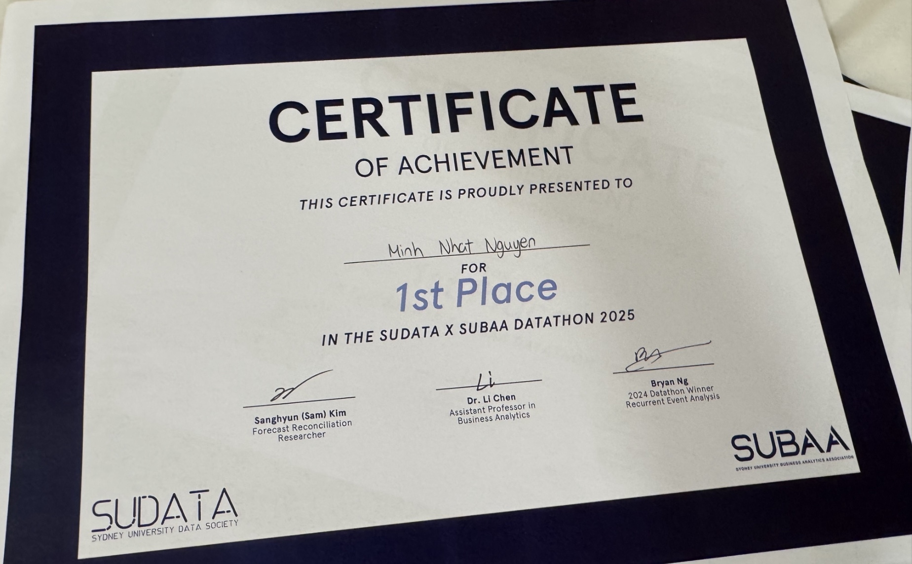

From the Far Left
to First Place.
In 2024, Calvin and I entered the Datathon and left without a placing. One year later, we returned as part of Team Clesmor — and won.
Where it began
Our first attempt was about prediction.
The 2024 competition focused on predicting JP Morgan stock-price movements. Our approach was primarily machine-learning driven: historical stock-price time series, tweet sentiment as a predictive feature, preprocessing, model training and cross-validation.
We did not place. But the experience gave us something more useful than a line on a résumé: one full competition cycle of building, testing, failing, presenting and learning under time pressure.

The return
A different problem. A different way of thinking.
The 2025 Datathon moved from financial prediction to supply-chain management. Team Clesmor — Lyra, Carmen, Calvin, Shane and Thomas — had 24 hours to turn raw logistics data into an actionable strategy.
The decisive moment
Our initial predictive models underperformed. Instead of forcing a weak model into the final story, we changed the question.
Forecasting
ETS and hierarchical forecast reconciliation explored delivery patterns and operational planning at aggregated levels.
Machine Learning
Cost and delay models were tested honestly. Weak held-out performance became evidence to reformulate the task rather than overstate predictive power.
Optimisation
We moved toward a data-derived logistics network and multi-objective optimisation across cost, delivery reliability and emissions.
A failed model can still be valuable when it tells you to ask a better question.
That shift — from prediction to decision-making — became the centre of our 2025 submission and the clearest sign of how much we had evolved since the previous Datathon.
Outcome
1st Place.
Team Clesmor won the SUDATA × SUBAA Datathon 2025. For me, the award connects two moments: standing at the far left of the 2024 group photo after an unsuccessful first attempt, and returning one year later with a stronger team, broader toolkit and a better way of thinking about data problems.
